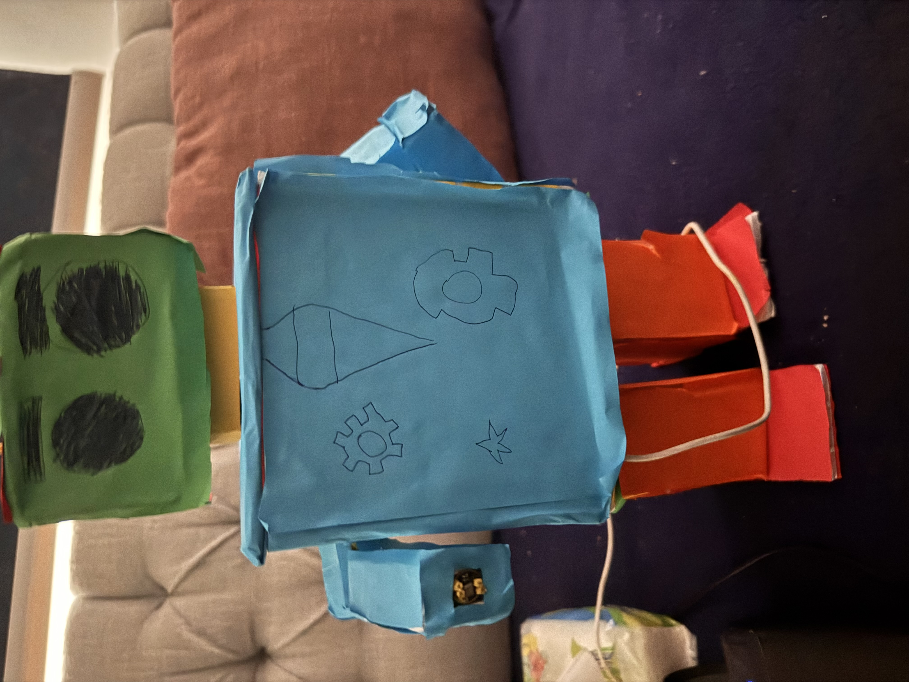
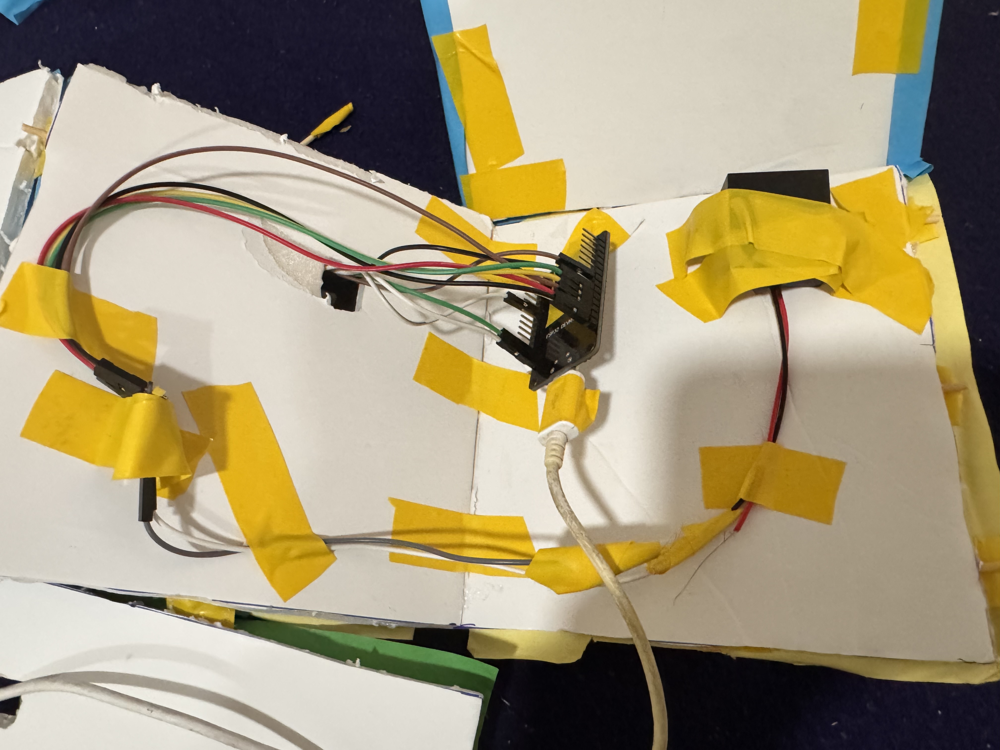
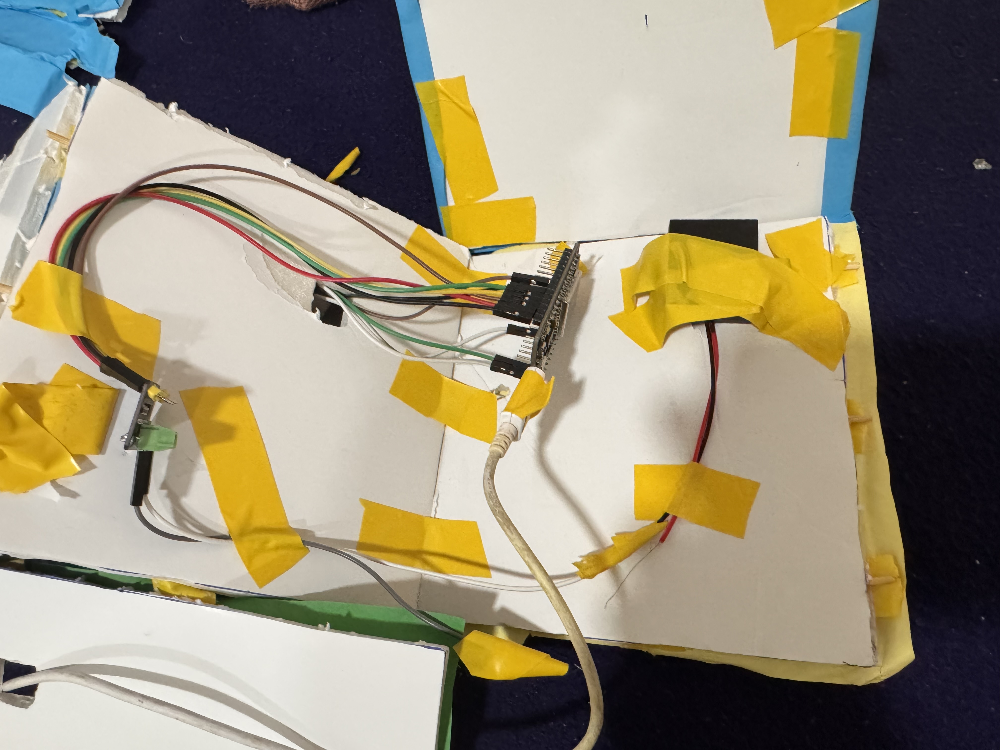
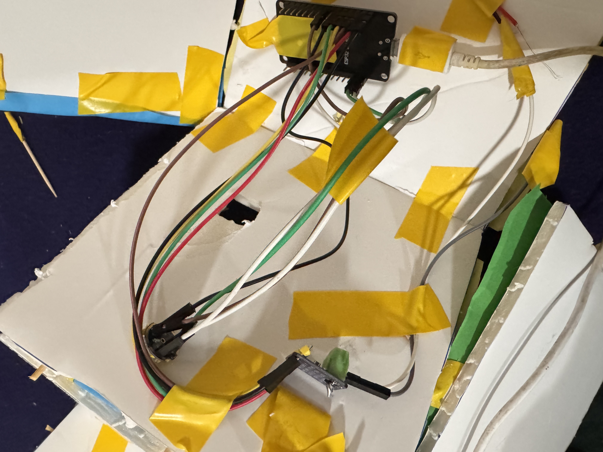

Jack is a real robot — custom ESP32 firmware streaming live audio over WebSocket to a Hostinger-hosted C# relay, feeding into OpenAI Whisper for Arabic speech-to-text, GPT-4o for the response, and TTS for the spoken answer played back through the robot's speaker.
Working hardware · Paused for desertification research · Active development resumes once Desertflow ships
What it does
∞Round trip
Microphone → cloud → GPT → speaker, all in one device
Say the Arabic wake word "مصطفى". The microphone captures your voice, the ESP32 streams 16-bit PCM audio over WebSocket to a VPS, the VPS routes it to a PC running voice-activity detection, the speech is transcribed by Whisper, sent to GPT-4o-mini for a reply, the reply is spoken by OpenAI TTS, and the resulting audio streams back through the same pipeline to play on the robot's speaker.
Every layer of that pipeline is custom code I wrote — firmware in C++, server in C#, hosted on a Hostinger VPS. The only thing I didn't build is the OpenAI models themselves.
What makes this project
⚡
Hand-built hardware
The chassis is cardboard and tape — but inside it's a real ESP32 with INMP441 I2S microphone and MAX98357A I2S amplifier. Soldering, wiring, GPIO mapping, dual-core RTOS task pinning — all of it done from scratch.
ESP32 · INMP441 mic · MAX98357A amp · I2S audio bus
⇄
Full-duplex audio over WebSocket
Bidirectional streaming: the robot's microphone uploads audio continuously while the speaker simultaneously plays back TTS chunks as they arrive. Mic auto-pauses during TTS playback to prevent self-recording.
The wake word is Arabic ("مصطفى"). The Whisper STT call is locked to language="ar". The GPT-4o-mini system prompt is in Arabic Fusha. The TTS voice ("onyx") handles Arabic phonemes. Not a translation layer — Arabic end-to-end.
مساعد · OpenAI Whisper · GPT-4o-mini · TTS
The robot, up close
Five photos of the actual hardware — not a render, not a stock photo. Cardboard chassis, hand-wired ESP32, real working prototype.
The assembled robot: blue/yellow cardboard body, green head with hand-drawn eyes, red arms. Built by hand from cardboard and tape; the brains are inside.

The chest panel with hand-drawn gear/eye/star symbols. The yellow strip on the side is masking tape covering the speaker mount.

The internals: ESP32 dev board mounted to the cardboard chassis with jumper wires running to the I2S microphone and speaker amp.

Close-up of the ESP32 dev board. Green/red/black/white jumpers connect to the INMP441 microphone (I2S input) and the MAX98357A amplifier (I2S output).

Wiring detail. The labeled ESP32 module at the top routes audio to / from the I2S bus, with the wiring channeled through cardboard cutouts.
From prototype to school stage
After the build, Jack went from a project on my desk to a presentation in front of the entire school — and a teaching opportunity with other students.
Live demo
The robot answering an Arabic question end-to-end — wake word, voice capture, cloud round-trip, spoken response through the on-board speaker. Click play to watch.
Recognition
Selected for the school morning broadcast
The project was chosen for the إذاعة (the school's morning assembly broadcast) — a presentation slot typically reserved for top student work. I stood in front of the entire student body and teaching staff to walk them through what Jack does and how it was built.
It was recognized as the first project of its kind to be presented at the assembly — combining custom hardware (ESP32, I2S audio), cloud infrastructure (WebSocket relay, OpenAI APIs), and Arabic-language voice AI in a single end-to-end build.
Following the presentation, I led informal teaching sessions with classmates on how the system actually works — from soldering and GPIO mapping on the ESP32 side, to WebSocket streaming and OpenAI API integration on the server side.
Community impact
What this changed for the people around me
Raised expectations for what a student-led technical project can be. Hardware + cloud + AI integration is no longer treated as "out of reach" at the school.
Sparked interest in embedded systems — several students started asking about ESP32 boards and where to buy the components after the presentation.
Showed Arabic-language AI as a real engineering target. Most voice-assistant demos students see are English-only; the wake word "مصطفى" and the Arabic responses changed how they think about what's possible in their own language.
Created a knowledge-transfer loop — what started as one student's side project became a small teaching effort: hardware basics, networking, API design, and how to debug all three at once.
Demonstrated that small-scale, low-cost hardware (an ESP32 board, a microphone, and an amplifier — under $20 in parts) can serve as the body for a serious AI system. Removes the "I can't afford to build this" excuse.
How a conversation with Jack works
Step 1
You say "مصطفى"
The INMP441 microphone captures your voice, the ESP32 batches 1500 samples at a time, base64-encodes them, and streams them via WebSocket to a Hostinger VPS that relays the audio to a PC.
Step 2
The cloud transcribes and responds
The PC runs auto-calibrating voice-activity detection, slices out the utterance, sends it to Whisper for Arabic transcription, checks for the wake word, and sends the rest to GPT-4o-mini with an Arabic system prompt.
Step 3
Jack speaks the answer
GPT's reply goes to OpenAI TTS, converts to 16 kHz PCM via FFmpeg, streams back to the ESP32 in 4 KB chunks. The robot pauses its mic during playback to avoid recording its own voice, and resumes listening after the last chunk.
TL;DR: You speak Arabic. The cardboard robot streams your voice to OpenAI, gets back a smart Arabic reply, and speaks it through its own speaker. End-to-end in one device.
Architecture & data flow
Three machines in the pipeline: the ESP32 on the robot, the Hostinger VPS as a WebSocket relay, and the PC doing the heavy lifting (VAD + STT + LLM + TTS). The VPS is intentionally dumb — it just routes JSON messages with target: "pc" or target: "esp32" between the two endpoints.
This three-tier design means the robot itself can run on a cheap ESP32 (no on-device ML), and the PC backend is replaceable — I could swap GPT-4o for a local LLM, or Whisper for an on-device STT model, without touching the firmware.
Hardware components
ESP32 dev board
Brain
Dual-core 240 MHz Xtensa, built-in WiFi. Runs the C++ firmware on FreeRTOS with separate tasks pinned to each core: microphone-send on core 0, speaker-playback on core 0 (priority 2), main loop + WiFi on core 1.
INMP441
Microphone
MEMS digital microphone with I2S output. 24-bit, configurable sample rate. Wired to ESP32 GPIO 25 (BCK), 27 (WS), 18 (DATA). 1.5× gain multiplier applied in software.
MAX98357A
Speaker amplifier
Class-D mono I2S amplifier, up to 3.2 W. Wired to ESP32 GPIO 12 (BCK), 14 (WS), 13 (DATA). 3× volume gain in software with clipping protection.
Cardboard chassis
Body
Hand-cut, painted, taped. Functional and durable enough for the prototype phase. A 3D-printed enclosure is on the roadmap; cardboard is fine for now.
Firmware highlights (ESP32, C++)
The ESP32 firmware is ~700 lines of C++ targeting the Arduino-ESP32 framework with the WebSocketsClient library. The interesting parts:
Audio pipeline
I2S read at 16 kHz, 32-bit shifted to 16-bit
Batch 3 × 512 samples before sending (reduces JSON overhead)
FreeRTOS queues for mic chunks, TTS chunks, WS-send messages
Pinned tasks for deterministic audio scheduling
Self-record prevention
Mic pauses (micEnabled = false) when TTS playback starts
Resumes when the last chunk's I2S buffer drains
Stops the robot recording its own voice and triggering false wake words
Heap-free JSON parse
Custom lite parser for TTS chunks (avoids malloc per audio packet)
Fixed 12 KB working buffer for base64 staging
Hand-coded JSON escape handling (only what TTS needs)
User feedback
Wake-word confirmation beep (1.2 kHz, 200 ms)
Speech-ended feedback (3 × 80 ms beeps at 1.1 kHz)
Periodic test beep (every 2 s, pauses during TTS)
LED status (on = disconnected, off = connected)
Networking
WebSocket heartbeat: 15 s interval, 30 s timeout, 3 pong retries
Auto-reconnect on disconnect (500 ms interval)
Mobile-hotspot mode: 8 kHz halves bandwidth
Server highlights (C#, hosted on Hostinger)
The backend is a C# console app (ConsoleApp4) running on a Hostinger VPS. It connects to the relay as the "pc" endpoint and does everything that needs real compute:
Auto-calibrating VAD
3-second background-noise calibration on startup
Median-of-samples noise floor (ignores outliers)
Speech threshold = 3 × noise floor (configurable)
State machine: 2 loud chunks = speech-start, 10 quiet = end
Min utterance 500 ms (filters cough/click)
Live RMS bar in console output
Jitter buffer
Detects WebSocket gaps > 1.5× expected
Pads with silence for gaps < 100 ms
Larger gaps logged as data loss
WAV recorder
Speech-start opens a new WAV file with proper header
The project taught me a stack I'd never touched in one piece before. Some of the things that turned out harder than they looked:
I2S timing is unforgiving. The microphone and speaker run as I2S master on separate peripherals (I2S_NUM_0 and I2S_NUM_1). Getting both DMA buffer chains stable enough to not glitch took several iterations on buffer-count + buffer-length tradeoffs.
You can't trust default JSON parsers on a microcontroller. ArduinoJson and similar libraries malloc per parse, and at 4 KB TTS chunks arriving every ~20 ms, the heap fragments within seconds. Replacing it with a hand-written lite parser fixed an entire class of stability bugs.
The wake-word problem is recursive. Without the mic-pause-during-TTS guard, the robot hears itself say the wake word and triggers a new conversation with itself. Mic gating is the simplest fix; on-device wake-word detection would be cleaner but adds complexity I didn't need yet.
Arabic TTS is harder than English TTS. The OpenAI TTS voices vary in how cleanly they pronounce Arabic phonemes. "Onyx" produces the most natural Fusha out of the six options; "alloy" sounds wrong on certain consonants.
Mobile hotspots eat bandwidth fast. 16 kHz PCM = 32 KB/s upstream, which on a 4G hotspot adds up to ~115 MB/hour just from the mic stream. Switching to 8 kHz halves it, at the cost of slightly muddier audio. Worth it for testing on the go.
Where it's going
Jack is paused while I focus on Desertflow, but it's not abandoned. The planned next steps when I come back to it:
Next — polish & ergonomics
3D-printed enclosure (replacing the cardboard)
On-device wake-word detection (porcupine or similar) — eliminates the need to send all audio to the cloud
Battery + buck converter (currently USB-powered)
Touch sensor as alternative to wake word
Later — capability
Local LLM fallback (Llama 3 / Phi-3 on a small Linux box) for offline operation
Conversation memory — short rolling context, persisted per-session
Camera + vision (ESP32-CAM or external) so it can see what you're asking about
English/French as secondary languages with auto-detection
FAQ
Why ESP32 instead of a Raspberry Pi?
The Pi would have been easier — could run Whisper locally, no WebSocket relay needed. But the ESP32 is <$10, runs for hours on a USB battery, and the constraint of "no on-device ML" forced a clean separation between hardware (the robot) and brain (the cloud backend). That separation makes it easier to swap pieces later — different LLM, different STT, different TTS — without re-flashing firmware.
Why route through a VPS at all? Couldn't the ESP32 talk to the PC directly?
The VPS is the only piece with a stable public IP. The ESP32 is behind a home router; the PC is behind the same router. Having both endpoints reach out to a VPS over WebSocket sidesteps NAT entirely. Same pattern any chat app uses.
How does the robot handle the OpenAI API key without exposing it?
The key never touches the ESP32 or the VPS. It lives in an environment variable (OPENAI_API_KEY) on the PC backend only. The robot sends audio bytes; the PC makes the API calls; the robot receives audio bytes back. The key never crosses the WebSocket.
Why Arabic first instead of English?
Most voice assistants treat Arabic as an afterthought — Alexa, Siri, and Google Assistant all support it, but their Arabic is noticeably worse than their English. Building one Arabic-first meant choosing the wake word, system prompt, TTS voice, and language flags for that target instead of bolting it on. The same code base trivially supports English by changing config; it just wasn't the priority.
What's the round-trip latency?
End-of-utterance to first-audio-chunk back is typically 2–4 seconds on a good connection. Most of that is the OpenAI API call sequence (Whisper transcription → GPT response → TTS generation). The audio streaming itself adds <200 ms each way. Could be cut to ~1 s with a faster LLM or by running everything locally.
Can I see the code?
Yes — the firmware (ESP32 C++) and the server (C# console app) will both go on GitHub once the project resumes after Desertflow. For now, the headline code snippets are on this page; full source is in private repos.
Get in touch
Questions about the hardware, the architecture, or replicating the design — (click to copy)